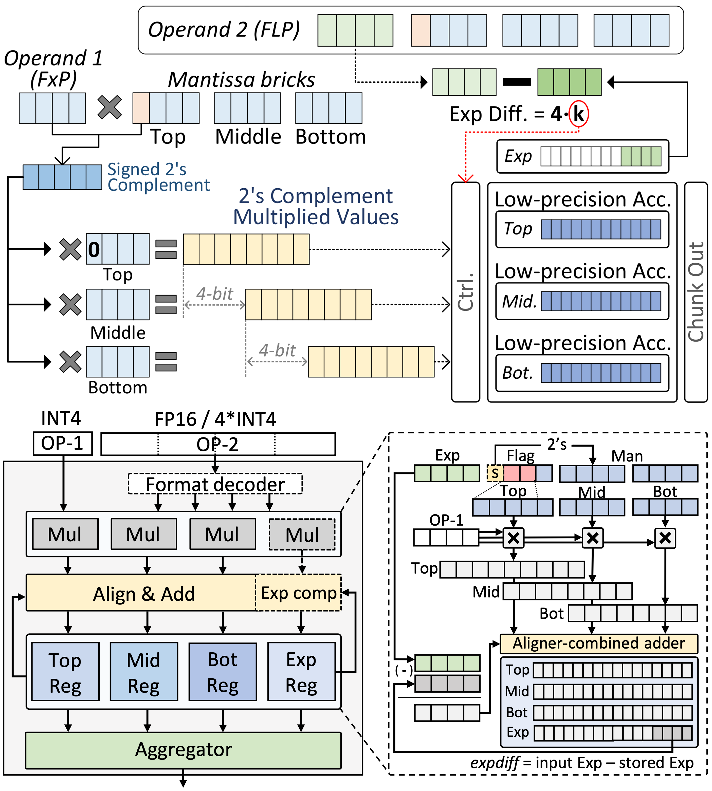
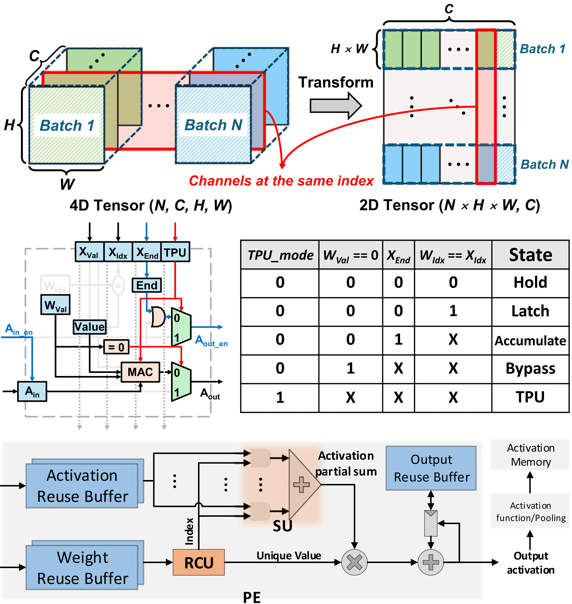
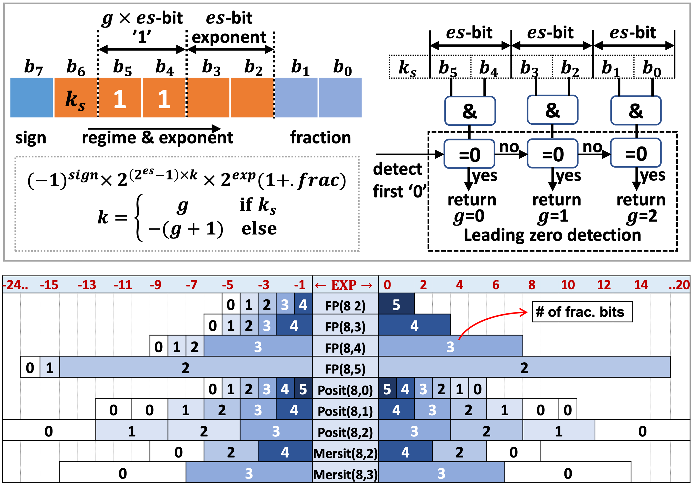

Domain-Specific Accelerator Design
A Dataflow Architecture Design (AI Processor)
-
Summary:
- A scalable deep-learning accelerator supporting the training process is implemented for device personalization of deep convolutional neural networks (CNNs). It consists of three processor cores operating with distinct energy-efficient dataflow for different types of computation in CNN training. A disparate dataflow architecture is implemented for the weight gradient computation to enhance PE utilization while maximally reuse the input data. -
Reference:
- Seungkyu Choi, Jaehyeong Sim, Myeonggu Kang, Yeongjae Choi, Hyeonuk Kim, and Lee-Sup Kim, "An Energy-Efficient Deep Convolutional Neural Network Training Accelerator for In Situ Personalization on Smart Devices," IEEE Journal of Solid-State Circuits, Oct. 2020.

Mixed-precision Processing units
-
Summary:
From two perspectives: 1) separate precision decision for each input data, 2) maintenance of high performance on inference, we configure the data with low-bit fixed-point of activation/weight and floating-point based error gradient securing up to half-precision. A novel MAC architecture is designed to compute low- and high-precision modes for the different input combinations. By substituting a high-cost floating-point based addition to brick-level separate accumulations, we realize both area-efficient architecture and high throughput for low-precision computation. -
Reference:
- Seungkyu Choi, Jaekang Shin, and Lee-Sup Kim, "A Deep Neural Network Training Architecture with Inference-aware Heterogeneous Data-type," IEEE Transactions on Computers, May 2022.
- Jongwoo Park, Hyeonsung Kim, Jiyun Han, and Seungkyu Choi, "A Mixed-Precision Architecture for Efficient DNN Training with Inference-aware Data-type," ACM/IEEE Design Automation Conference (DAC), 2025.

Sparsity-aware PE architecture
-
Summary:
- Multi-window dataflow architecture for selective weight update
- Redundancy Censoring Unit (RCU)-based PE architecture -
Reference:
- Jaekang Shin, Seungkyu Choi, Yeongjae Choi, and Lee-Sup Kim, "A Pragmatic Approach to On-device Incremental Learning System with Selective Weight Updates," ACM/IEEE Design Automation Conference (DAC), 2020.
- Kangkyu Park, Seungkyu Choi, Yeongjae Choi, and Lee-Sup Kim, "Rare Computing: Removing Redundant Multiplications from Sparse and Repetitive Data in Deep Neural Networks," IEEE Transactions on Computers, Apr. 2022.

Hardware-Efficient Data Formats
-
Summary:
- a novel 8-bit PTQ data format designed for various DNNs
- Leveraging the dynamic configuration of exponent and fraction bits derived from Posit data format, but demonstrates enhanced decoding efficiency -
Reference:
- Nguyen-Dong Ho, Gyujun Jeong, Cheol-Min Kang, Seungkyu Choi, and Ik-Joon Chang, "MERSIT: A Hardware-Efficient 8-bit Data Format with Enhanced Post-Training Quantization DNN Accuracy" ACM/IEEE Design Automation Conference (DAC), 2024.
